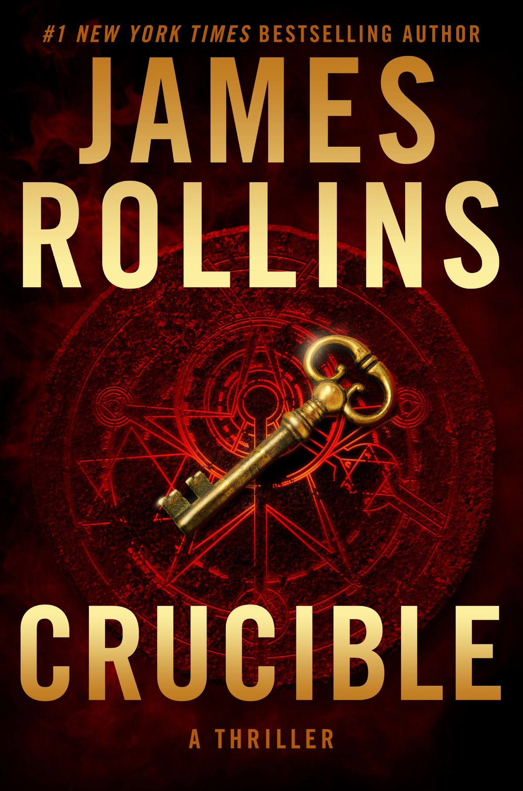

CRUCIBLE
When Sigma Force headquarters is attacked on Christmas Eve and a colleague is kidnapped, Commander Gray Pierce must untangle a conspiracy centuries in the making, one that threads through the Inquisition, the Knights Templar, and the birth of artificial intelligence. At its heart lies a forbidden crucible that could reshape civilization or end it.
GRAY PIERCE
COMMANDERA brilliant tactical mind with a soldier's instincts and a scholar's curiosity.
SEICHAN
OPERATIVEA highly skilled operative whose loyalties and alliances are constantly tested.
MARA SILVIERA
SCIENTISTA brilliant scientist connected to the technological mystery at the heart of the story.
The Knights Templar are purged, and their secret knowledge disappears into history.
The Spanish Inquisition becomes connected to the mystery surrounding forbidden knowledge.
A mysterious woman arrives at Sigma headquarters, setting the modern investigation in motion.
Gray Pierce follows a trail linking ancient secrets with a dangerous technological breakthrough.
"Knowledge is the greatest treasure — and the most dangerous weapon ever forged."
"Some secrets were buried for good reason."
THE CRUCIBLE STONE
A mysterious artifact connected to the central scientific and historical mystery.
TEMPLAR CODEX
An ancient source of forbidden knowledge.
THE BRAZEN HEAD
A legendary object connected to hidden knowledge.
FORBIDDEN GRIMOIRE
A symbol of the dangerous knowledge being pursued.
"An absolutely riveting experience. I barely slept until I finished it."
— MIREILLE V."The world-building is extraordinary. Every page reveals something new."
— ALEKSANDER D."I found myself holding my breath during the final chapters."
— ISADORA M.